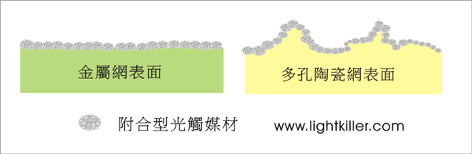
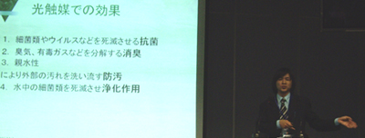
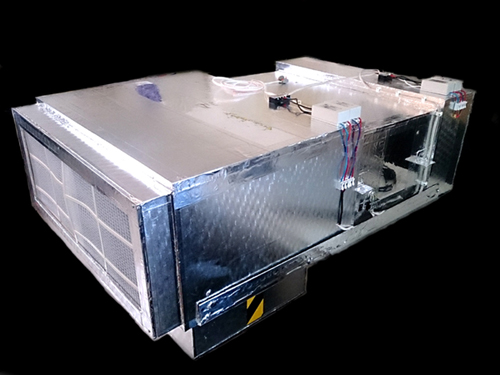

光觸媒清淨機(設計、合作)步驟：
1. 依客戶所需(討論用途、目標價)；使用環境條件，其抗菌或抗污、除臭....等不同功能是否可行。
2. 依被加工材料或元件，選用最佳之光觸媒原料及最佳節省原料之加工法。
3. 產品或模組使用光學設計，使其充份發揮其效果。
4. 其它(專利、安規、效能驗證...等)。
世屋光觸媒加工自2002年從日本引進台灣，已具有20多年之加工技術與經驗，並榮獲政府研發補助，以及榮獲國際大賞獎等。

臭味來源通常都是有機物，在一般大樓之臭味發生原因，有時極難處理，原因是其臭味有時是排水問題或是動物屍體所造成，而一般家庭臭味大都是濕度太高，門窗不通風，細菌衍生之臭味，許多舊大樓產生不明臭味，原因是設計不良或因裝潢改掉原本通風口，或是水肥未定期抽除造成臭味，除此外一般臭味都比較容易處理，以常見之臭味如下強刺激臭、刺激臭、Skatol(C9H9N)-糞尿臭、硫化氫(H2S)腐卵臭、Trimethyl amine(CH3）3N- 腐敗魚臭...等等，光觸媒可吸收光而成為高能量狀態，再將此高能量輸給反應物(臭味)質，使引起其產生分解，成為不具臭味且無害之物。
解決臭味的對策
1.清洗消毒臭味來源 2.保持通風與乾燥 3.使用輔助設施除臭 4.通風管路水管定期維修 5.定期消毒清潔作業

設計光觸媒產品上，要以接觸面積大、材料穩定性佳、附著度好、處理量..等為考量，除此外下列更需作為考慮因素：
材料： 1.光觸媒材料 2.被加工材料 3.接著材料 4.電子材料。
力學： 風力損耗、流體力學。
光學： 光照強度、光照面積、選用波段、光學設計。
經濟： 成本、耐用度..市場相同之商品區別。
VOCs與NOx為空氣污染之兩大指標污染源，光觸媒目前唯一可去除此兩項之觸媒，但是傳統光觸媒在與NO氧化過程會產生NO2會形成HNO3，會對光觸媒效果產生不利影響，許多光觸媒不是對VOCs較有效不然就是對NOx較有，極少數兩者有效，如果選錯原料，加工法錯誤，產品就將大打折扣。

因此選用光觸媒材料不單只是選用奈米級之TiO2，而是針對不同用途選擇最佳之光觸媒原料及加工法，例如：光觸媒除臭加工可利用具有磷灰石的銳鈦礦型之多孔細二氧化鈦效果為佳。
我們提供光觸媒與UV光源之設計與代工，並協助取得當地或多家之認證，多種各式新型除臭濾網，可用於冰箱、空氣清淨機、保鮮機、脫臭機等使用低電量並符合歐盟法規，使您的產品更具競爭力。
1. 依客戶所需(討論用途、目標價)；使用環境條件，其抗菌或抗污、除臭....等不同功能是否可行。
2. 依被加工材料或元件，選用最佳之光觸媒原料及最佳節省原料之加工法。
3. 產品或模組使用光學設計，使其充份發揮其效果。
4. 其它(專利、安規、效能驗證...等)。
世屋光觸媒加工自2002年從日本引進台灣，已具有20多年之加工技術與經驗，並榮獲政府研發補助，以及榮獲國際大賞獎等。